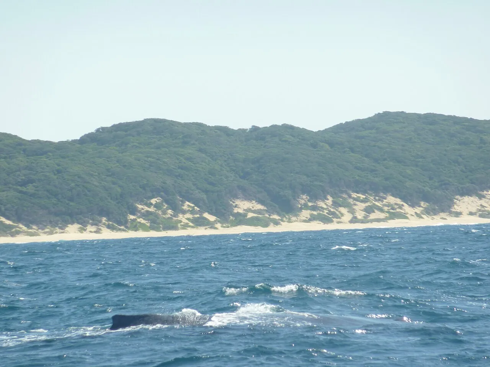

Sodwana Bay
iSimangaliso, Afrique du Sud · plongée, snorkeling

Récifs coralliens les plus au sud d’Afrique, dans un parc classé au patrimoine mondial. Une plongée tropicale accessible.
- Lieu
- iSimangaliso, Afrique du Sud
- Niveau
- Débutant
- Activités
- plongée, snorkeling
- Type d'eau
- Mer / océan
- Coordonnées
- -27.54, 32.68 (position approximative du secteur)
Dangers à connaître
- Mise à l’eau par la plage.
- Courant sur certains récifs.
Le conseil d'Ocean Buddy
Réserve tes plongées à l’avance en haute saison, entre novembre et mai.
Ouvrir dans Ocean Buddy Télécharger sur l'App Store
Source : Fiche Ocean Buddy · septembre 2026 · à vérifier localement.